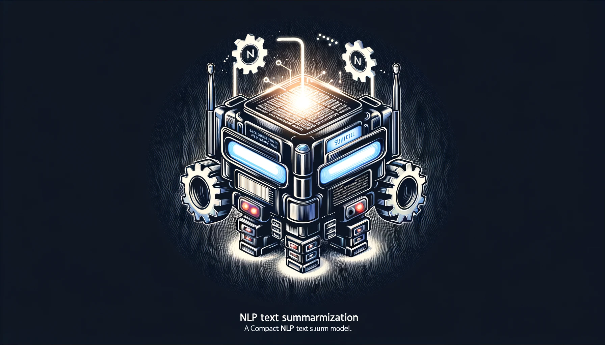

In this project, I Fine-tuned a smaller version of the T5 text summarization trasformer to produce more accurate and concise summaries, especially for dialogues.
The Fine-tuned model outperforms its larger counterparts in accuracy and efficiency.
Its smaller size allows it to be run on local devices, making it more accessible and user-friendly, showcasing a significant advancement in accessible NLP technology.

In this project, I developed an interactive dashboard with Plotly Dash that displays the daily life and movement of 1000 residents in Engagement Ohio. It features map visualizations and time-based animations to highlight population movement patterns, providing key insights into their daily routines and behaviors, and also shows how education and skills are linked to income levels.
This project provides a detailed statistical analysis of the Boston housing market using R, examining relationships between property characteristics and median home values. Utilizing techniques like hypothesis testing, ANOVA, and linear regression, it offers valuable insights into urban housing dynamics and economic factors influencing Boston's real estate.
"Fos classification" is an innovative deep learning project that developed a system for the classification of figures of speech. This advanced initiative showcases a deep learning model, integrating BERT and GPT-2, to accurately understand and interpret complex language structures with a notable 92% validation accuracy.
In the dynamic field of healthcare analytics, I led a groundbreaking project on diabetic patient data. Utilizing advanced tools and detailed data management, I improved predictive models, identifying key factors for patient readmission with 88% accuracy. The meticulous data preprocessing reduced error rates by 50%, significantly enhancing model performance.
In our paper "Blockchain Ecosystem for Credit Transfer in Education," we developed a secure, blockchain-based system to enhance credit transfer in educational institutions. We implemented a decentralized smart contract to convert and transfer student credits as tokens in a blockchain wallet, leveraging public key encryption and hashing for robust security. Our research rigorously tested the system's resistance to cyber threats and analyzed its scalability, demonstrating its effectiveness in managing student data and credit transfers across educational platforms.